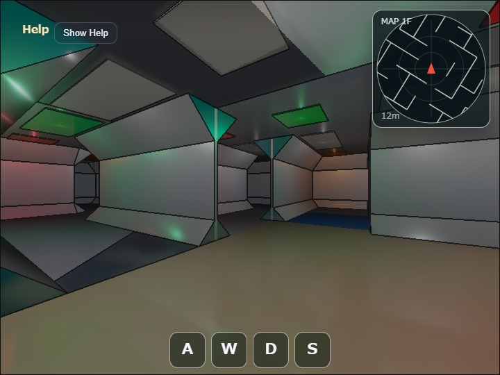

maze2 (sci-fi tube edition)
English | 日本語

Overview
maze2 is a walk-through maze with a 4 m wall-center pitch and ceiling height. Structural slopes at the wall/floor and wall/ceiling corners produce an octagonal corridor section. At an L corner, quadrilateral miter bridges directly join the end edges of perpendicular rails, closing the joint without extending an unnecessary surface across the opening. Rendering, collision, and radar geometry share the same logical wall boundaries so doors and junctions remain traversable.
Rendering uses ComputeEffectPipeline. The G-buffer, Deferred Shading, SSR, Bloom, and geometry edge stages share the same CameraFrame finalized by WebgApp immediately before drawing.
Each cell has a thin longitudinal ceiling panel centered at y = 3.95m, with a point Local Light for corridor illumination below it at y = 3.70m.
The point Local Light illuminates all directions with a radius of 7.2m and an intensity of 5.2, lighting the corridor below while producing a strong direct reflection on the fixture underside about 0.2375m above the light.
The structural ceiling uses a roughness of 0.55 to broaden and weaken narrow specular highlights from the point lights.
Because the Shadow Map is disabled, geometry between a point light and an illuminated surface does not occlude the light.
The fixture-wide emissive value is reduced to 0.10; the main high-dynamic-range highlight instead comes from direct lighting on the underside with specular = 0.80 and roughness = 0.10.
White lights account for 60% of cells, while green, orange, and red each account for 13.3%.
Up to 64 nearby lights are evaluated.
SSR is applied to the floor, walls, slopes, and ceiling.
Bloom uses threshold = 0.60, softKnee = 0.40, strength = 1.10, and 1/32 Weight = 0.80, producing a broad glow from the underside HDR reflection rather than from fixture-wide self-emission.
The Shadow Map and SSAO effects remain disabled.
Detailed geometry rules are documented in maze2_spec.md.
How to Run
- Open ./maze2.html
- Use a browser with WebGPU support
- Use drag and keyboard controls on desktop and the on-screen touch controls on coarse-pointer devices
- Open the Command Palette with double tap, double click, or the
/key
webg Features Used
WebgApp: combines initialization, the render loop, CameraFrame, HUD, Help Panel, and GPU timingEyeRig: provides the first-person view direction and movement basisShape: combines floors, walls, slopes, rails, ceilings, and light panels into grouped GPU meshesComputeEffectPipeline: runs the G-buffer, Deferred Lighting, SSR, Bloom, and geometry edge stages with one CameraFrameFullscreenPass: presents the pipeline's final display texture on the canvasCommandPalette: changes low-frequency settings such as SSR intensity and geometry edgesDiagnostics: reports triangle count, collision segments, active lights, and GPU timing through the HUD and reports- Sample-side
CollisionWorld: resolves a cylindrical player against logical wall segments in the XZ plane
Implementation Flow
main.js builds a 15 by 15 cell maze from a fixed seed, overlays rooms and doors, and finalizes traversable logical wall boundaries. It then creates grouped floor, slope, wall, rail, and ceiling meshes and collision segments from the same boundaries. The radar reads those collision segments, so visible walls, movement constraints, and radar lines are not generated from separate rules.
During each update, input produces first-person movement and CollisionWorld pushes the player cylinder out of wall segments. Nearby lights are selected again only after the camera has moved a configured distance, and at most 64 lights are sent to Deferred Lighting. The HUD and radar use the position after collision resolution.
For rendering, ComputeEffectPipeline.renderScene() uses the cameraFrame received by onBeforeDraw, and encode() receives the same frame in onAfterDraw3d. The completed texture is presented through beginPresentPass() and FullscreenPass, followed by clearDepthBuffer() to restore the depth-enabled HUD pass. Shadow Map and SSAO remain disabled; SSR, Bloom, and geometry edges are enabled according to their settings.
Controls
- Horizontal drag: rotate heading and view
- Vertical drag: temporarily look up or down
W/S: move forward / backwardA/Left Arrow: turn right;D/Right Arrow: turn leftShift: run5/6: decrease / increase SSR intensity0: reset to position[5.8319, 0.0, 2.3017], eye height1.60m, and yaw31.5°K: screenshot- Double tap / double click or
/: command palette Edgein the CommandPalette: toggle geometry edges
Verification
- Straight corridors show an octagonal floor-to-ceiling section
- Doors, corners, junctions, and rooms remain traversable without wall leaks
- A strong reflection appears at the center of each fixture underside and produces a broad Bloom glow
- Toggling SSR changes the floor and metal rail reflections
- Three-way and wider junction floors use a blue-green color that distinguishes them from regular corridors
- The HUD reports triangles, collision segments, active lights, and GPU timing
- The radar covers a 12 m radius
Files
maze2.html: demo pagemain.js: maze generation, grouped meshes, first-person controls, deferred lighting, SSR, and geometry edgesCollisionWorld.js: cylindrical player collision against logical wall segmentsmaze2_spec.md: detailed geometry, maze-generation, collision, and lighting specificationmaze2.txt: Japanese overview used by the sample index